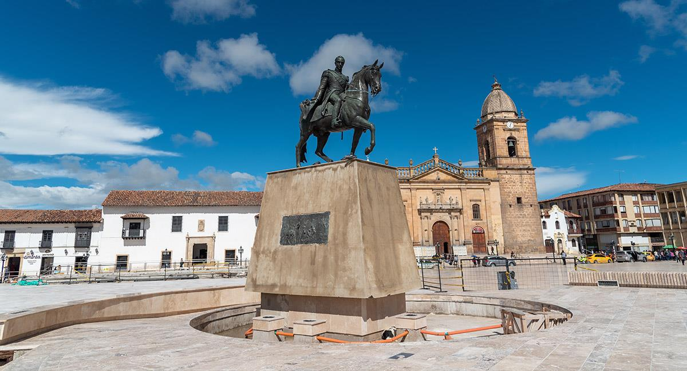
Tunja, capital de Boyacá, es una ciudad reconocida por su importancia histórica y cultural. Sus calles conservan construcciones coloniales, iglesias y espacios que recuerdan diferentes etapas de la historia de Colombia.
Entre sus principales atractivos se encuentran la Plaza de Bolívar, el centro histórico, iglesias coloniales y diferentes museos y monumentos. La ciudad también es un punto estratégico para conocer otros destinos turísticos del departamento.
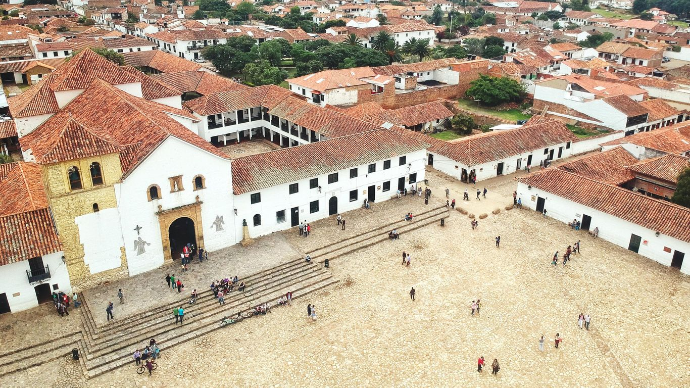
Villa de Leyva es uno de los municipios turísticos más reconocidos de Boyacá. Su arquitectura colonial, calles empedradas y enorme plaza principal hacen que sea uno de los destinos más representativos del departamento.
El municipio ofrece diferentes atractivos naturales, históricos y culturales. Entre ellos se encuentran la Plaza Mayor, museos, construcciones coloniales y lugares naturales de los alrededores.
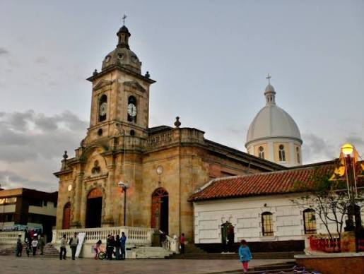
Paipa es uno de los principales destinos turísticos de Boyacá y es conocido especialmente por sus aguas termales, paisajes y espacios destinados al descanso.
El municipio también tiene una importante relación con la historia de Colombia debido al Pantano de Vargas, lugar relacionado con la campaña independentista. Además, el Lago Sochagota permite realizar diferentes actividades recreativas.
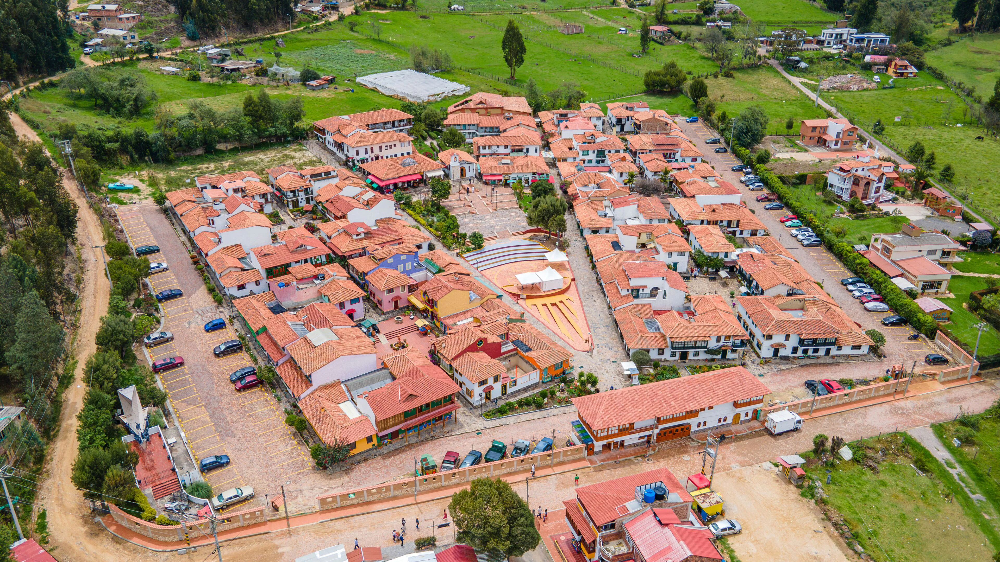
Duitama es uno de los municipios más importantes de Boyacá y funciona como un punto de conexión hacia diferentes destinos del departamento. Su oferta turística combina cultura, historia, naturaleza y arquitectura.
Uno de sus lugares más conocidos es el Pueblito Boyacense, un espacio que reúne representaciones arquitectónicas de diferentes municipios tradicionales de Boyacá.
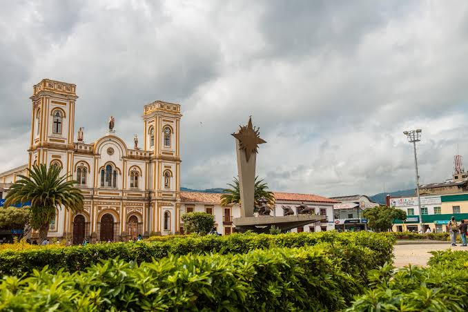
Sogamoso es una ciudad con una fuerte relación con la cultura muisca y con la historia de la región. Su ubicación permite conectarla fácilmente con otros destinos turísticos del centro de Boyacá.
Uno de sus principales atractivos culturales es el Museo Arqueológico, relacionado con el pasado indígena de la región. También es un punto de partida para visitar el Lago de Tota y municipios cercanos.
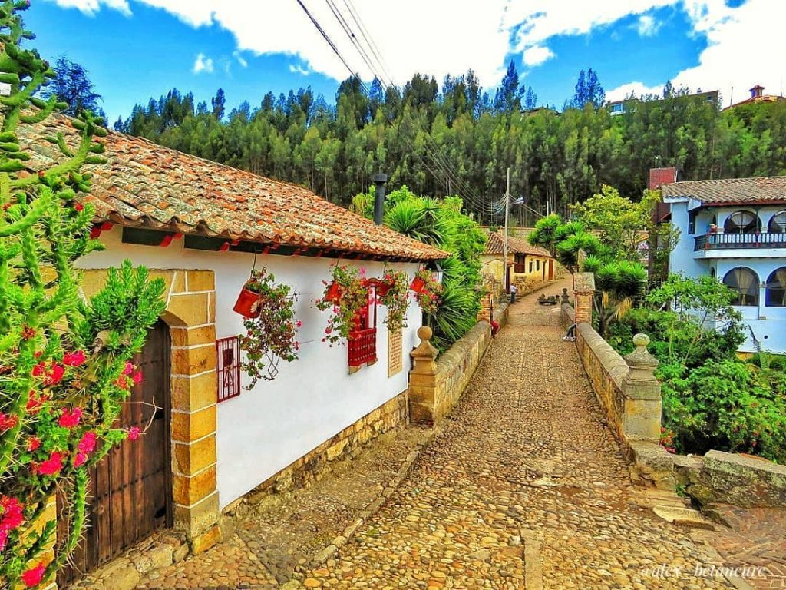
Monguí es reconocido por su arquitectura tradicional y por su relación con la fabricación artesanal de balones. Sus calles y construcciones conservan un estilo característico que hace parte de su atractivo turístico.
Además, sus alrededores permiten realizar actividades relacionadas con la naturaleza y el senderismo.
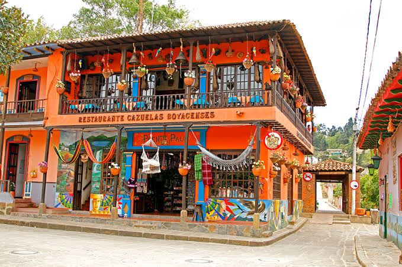
Ráquira es conocido especialmente por sus artesanías y trabajos en cerámica. Sus calles llenas de color y sus tiendas de productos hechos a mano hacen del municipio un destino atractivo para quienes buscan conocer las tradiciones artesanales de Boyacá.
La cerámica representa una parte importante de su identidad cultural y permite a los visitantes conocer técnicas y productos elaborados por artesanos locales.
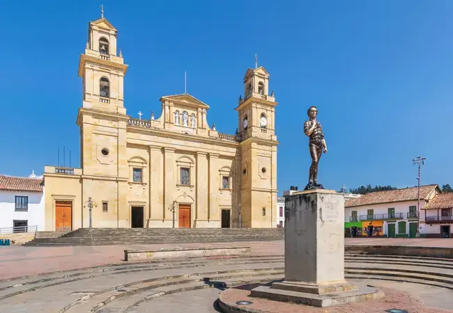
Chiquinquirá es uno de los municipios más importantes del occidente de Boyacá y es reconocido especialmente por su tradición religiosa. La ciudad recibe visitantes interesados en conocer su patrimonio cultural y religioso.
Uno de sus lugares más representativos es la Basílica de Nuestra Señora del Rosario, además de sus plazas, calles y espacios culturales.
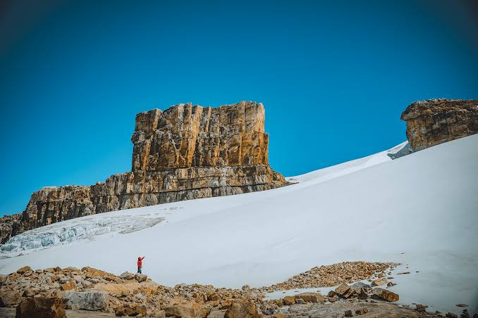
El Cocuy es uno de los destinos más importantes de Boyacá para quienes buscan naturaleza y aventura. Su principal atractivo es su cercanía con el Parque Nacional Natural El Cocuy, donde se encuentran impresionantes paisajes de montaña.
El municipio es un punto de encuentro para turistas interesados en senderismo, montañismo y experiencias relacionadas con la naturaleza.
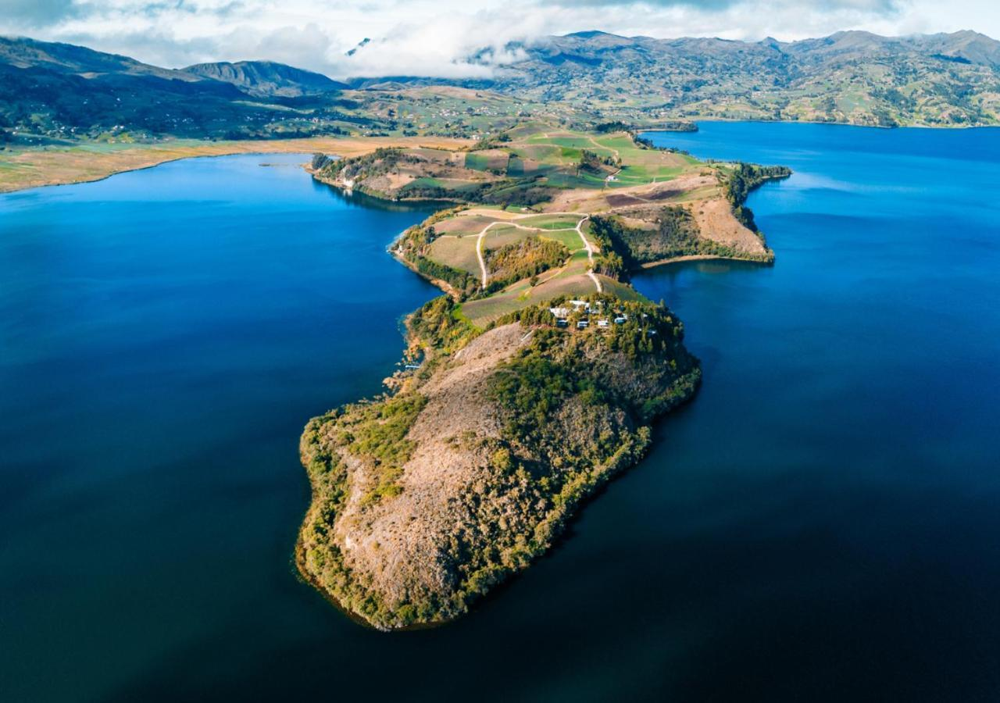
Aquitania se encuentra junto al Lago de Tota, uno de los paisajes naturales más conocidos de Boyacá. Sus montañas, clima frío y paisajes hacen del municipio un destino atractivo para quienes buscan naturaleza y tranquilidad.
Uno de los lugares más conocidos de la zona es Playa Blanca, donde los visitantes pueden disfrutar del paisaje del lago.
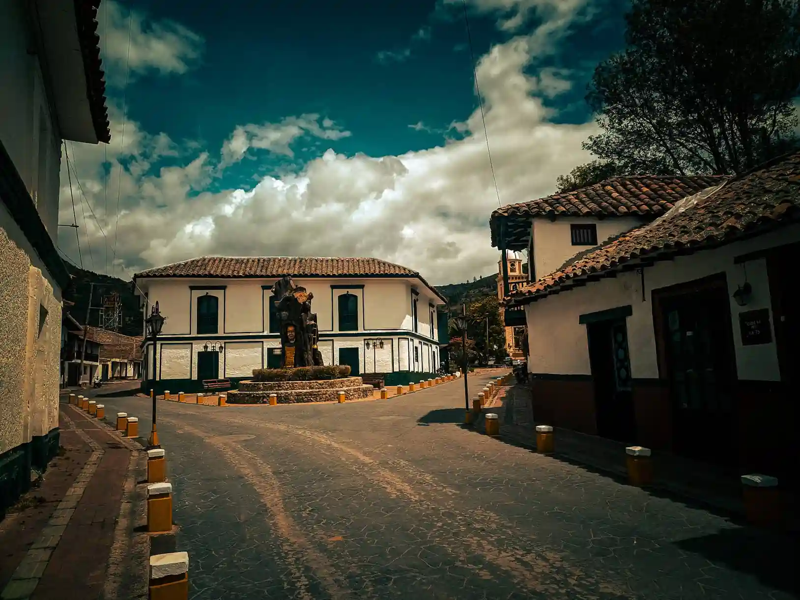
Iza es un pequeño municipio reconocido por sus calles tranquilas, arquitectura tradicional y ambiente acogedor. Es una buena opción para quienes buscan una experiencia más tranquila y disfrutar de la cultura de los pueblos boyacenses.
Su cercanía con el Lago de Tota y otros municipios permite integrarlo fácilmente dentro de diferentes recorridos turísticos.
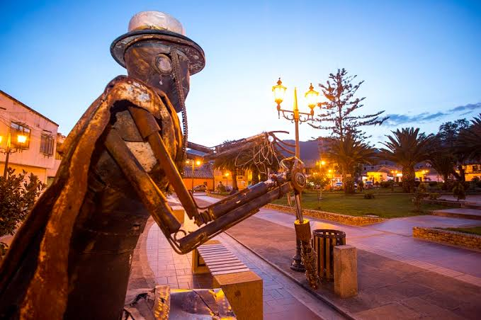
Nobsa es reconocido por sus artesanías y especialmente por la elaboración de productos tradicionales como las ruanas. El municipio representa una parte importante de las tradiciones artesanales de Boyacá.
Sus calles y establecimientos permiten conocer diferentes productos elaborados por artesanos de la región.